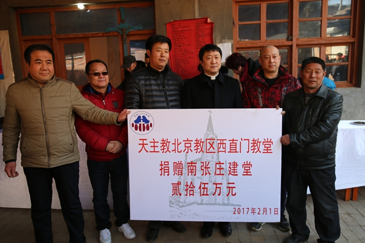
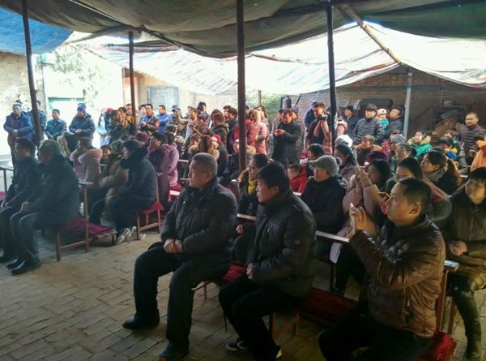
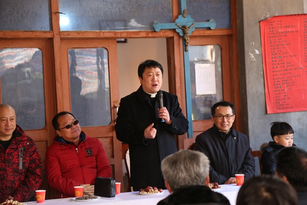
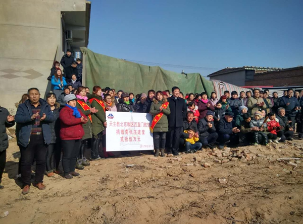

自2016年12月11日河北邢台南宫南张庄教堂被一场大火烧毁后，这个华北平原上的小堂口的重建工作牵动了全国各地神长教友们的心，一些神长教友慷慨解囊，热心捐献。
2017年2月1日，北京西堂本堂张洪波神父带领西堂的15位教友利用新年假期，长途驱车前往当地慰问痛失圣堂的神长教友，并为重建圣堂捐献25万元。

当天早饭后，南张庄的教友们便开始忙碌起来，他们不顾寒冷，在院子里为大家准备温情的大锅饭午餐，一些老年教友更来到临时用塑料布搭建的帐篷堂内祈祷等待。

11：00，当张洪波神父与西堂教友们抵达时，受到了全村教友及邻近堂区会长代表们热烈欢迎。阵阵掌声传达了教友们的热情期待、声声问候流露出教会一家人的温暖情意。
张洪波神父在捐献仪式中说：“教堂失火是天主对我们的一种考验，让我们勇敢地背起这个十字架，透过痛苦的考验，使我们更加相亲相爱。以前我不知道这个村子，透过信德报获悉教堂失火的详情后，我们在堂区的周刊上刊登此消息，西堂的教友们积极踊跃捐献，希望把天主的圣殿更快更好地重建起来。很多教友们是匿名奉献的。这是我们，也是所有关心我们堂教堂建设的弟兄姐妹们的心愿，更体现了教会是一家的和谐共融。
一个肢体有痛苦，全身都不舒适，所以让我们在天主的爱内共同祈祷，奉献爱心，让教堂早日重建起来。”

信仰交流现场

大火无情，大爱无疆，点滴之爱，能汇聚爱的海洋，一双双援助之手紧握一起，就会让主之圣殿重新屹立。各位神长教友们的爱心就是南张庄教友挥汗拼博重建教堂的力量，你们的奉献都会成为永恒生命的美丽点缀和无限荣耀。耶稣在圣经上告诉我们：“你们为我最小一个弟兄所做的就是对我做的。”愿天主祝福每一位恩人及其家庭。
作者：林林|来源：信德网摄影：勾琳、华沛